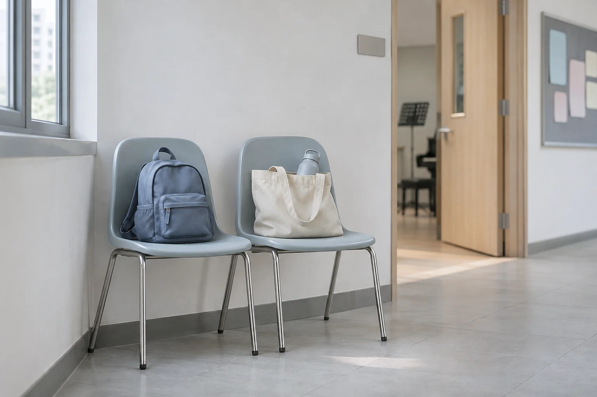
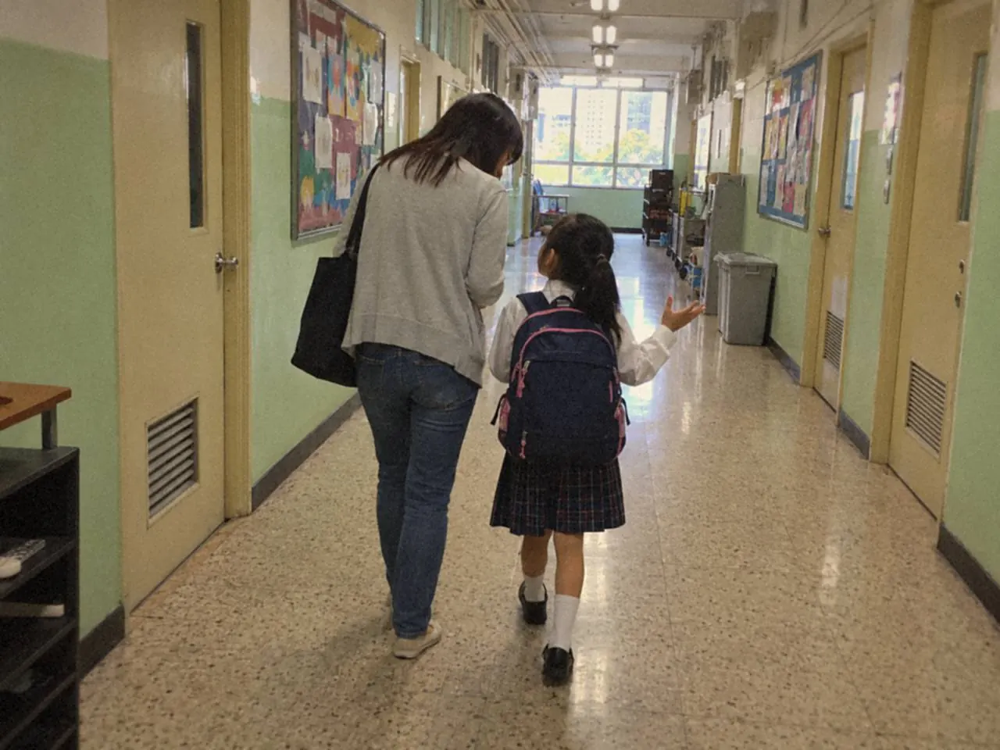
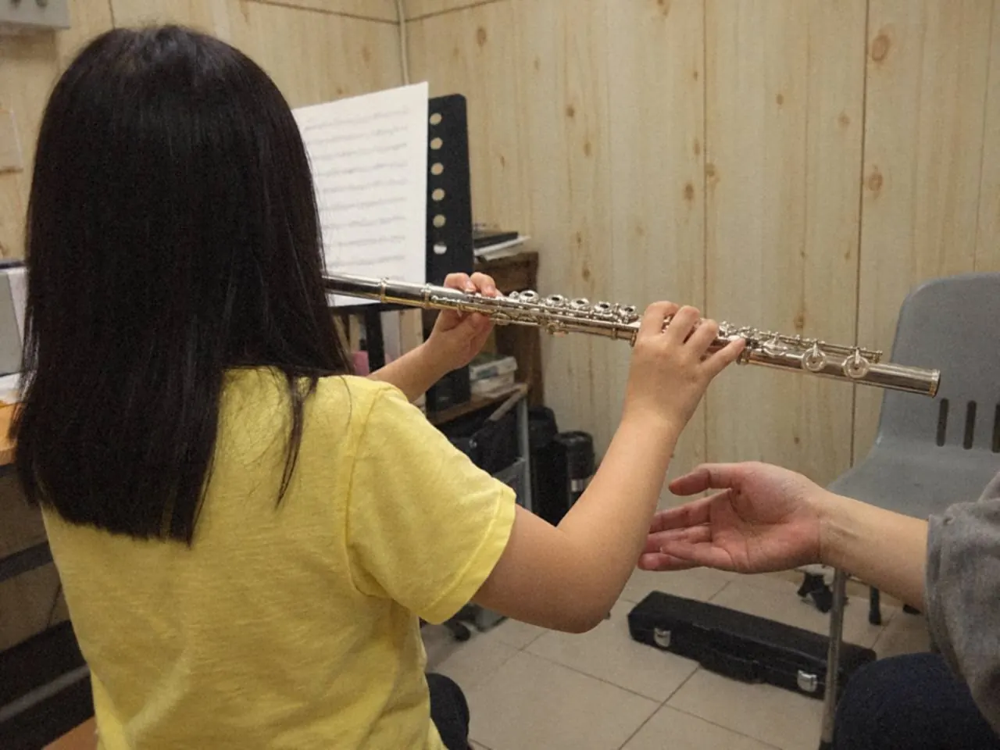
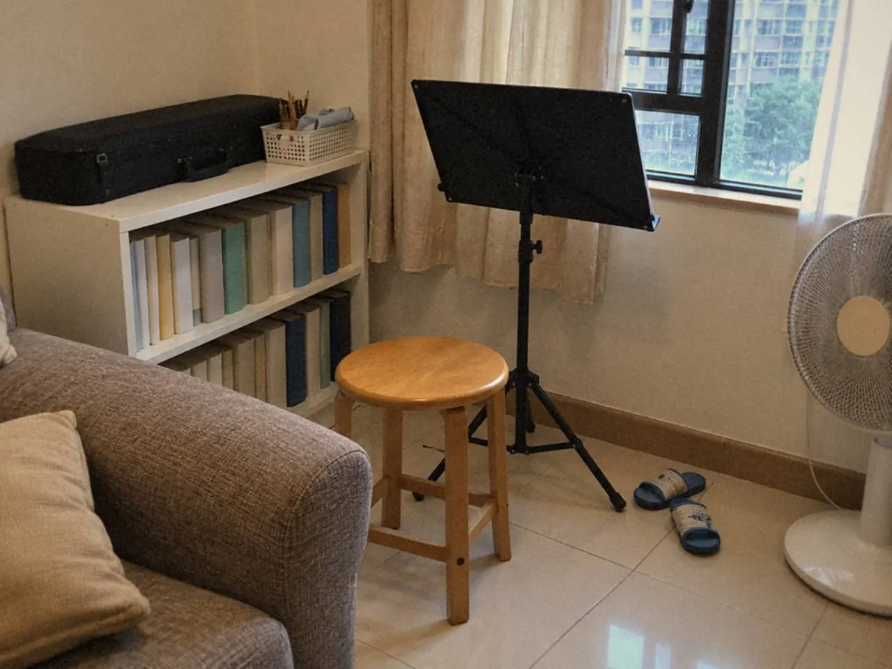

第一堂前一晚，家長通常在 WhatsApp 問同一件事：要買定樂器嗎？

答案多數是：不必。第一堂真正需要的，只有孩子本人、一段時間，和家長願意聽的耳朵。要準備的東西比想像中少，而且大部分可以等上完第一堂才決定。
教了二十年，最常見的情況是家長在課前把路鋪得太整齊：樂器買了、教材買了、目標也定了，孩子卻連課室都未入過。鋪得太早，反而容易變成壓力。
上課前，先想清楚三件事
第一，孩子接觸過甚麼音樂。家裏常播的歌、學校的音樂課、看過的演出，都算。這些比「有沒有天分」這種問題有用得多——天分這回事，第一堂看不出來，第二十堂也未必看得出來。
第二，想學哪一種樂器。孩子說得出名字最好；說不出，也可以講講喜歡哪一種聲音：亮的、沉的、吹的、敲的。聲音的偏好，往往比樂器的名字更接近他真正想要的。
第三，平日哪段時間真的空出來。這一條最容易被略過，也最影響進度。時間表排得滿，不是不能學，只是練習要短而固定，老師編排時也要知道。忙起來的日子，誰都心有餘而力不足，問題不在意志。
已有樂器或教材，第一堂帶來，一併看看合不合用。合用就省一筆；不合用，早一點知道總比練了半年才發現好。
跟孩子說上課，講得具體一點就夠：「去聽聽聲音，試試怎樣玩。」不必先許下考級或演出的承諾。孩子帶着「今天要交出成績」的心情入課室，身體先僵一半。
年紀小的，順帶告訴老師幾件實際的事：能不能自己拿穩樂器、坐得住多久、對陌生人通常有甚麼反應。這些不能只按歲數推算，同一個歲數的兩個孩子，差別可以很大。
下課後，先聽孩子說。「哪個聲音你最記得？」「有甚麼想再試？」這些問題比追問表現和排名好。孩子答得含糊，也不必追。有時候他只是未想清楚。

揀樂器，先試手，不必先試牌子
第一件樂器很容易被當成一句承諾：買了，就要一直學下去。帶着這個念頭去選購，家長往往不敢讓孩子多試，怕試完不買不好看。結果買回來的，是網上評價最好、卻未必合手的那一支。
我見過不少這樣的例子：孩子在家長面前吹得很好，換一支笛就吹不響，問題多在孔距，不在孩子。
合手是很具體的：拿起來肩膊有沒有聳、手腕有沒有扭、手指按下去要不要伸到極限。孩子拿得起，不等於可以維持二十分鐘。姿勢一開始就歪，日後要花幾倍時間改。

試的時候，先用容易的音和動作。當天吹得出漂亮旋律，與日後能否穩定練習，是兩件事。
售後和保養也要問清楚：維修要寄去哪裏，清潔用品是否容易買到，半年後要換甚麼。二手樂器可以考慮，但要有人看過，外表光亮不代表內裏妥當。
保養可以分工。孩子做得到的收納步驟，教清楚讓他自己做；需要力度和細緻的部分，成人接手。樂器不該是只准遠觀的貴重物件，也不必全交給孩子摸索——兩邊都容易出事。
家裏一角，夠用就好
每次練習都要搬椅子、找鉛筆、借手機開節拍器，孩子還未出聲，注意力已經散了一半。練習角不需要一個房間，只需要常用物品都在手邊。
香港的住家，一支可移動的譜架、一格固定的抽屜，已經幫上很多。先看三樣：光線夠不夠照到譜面、譜架高度合不合、樂器有沒有地方安放而不會被碰到。

當週的教材和老師寫的幾句要求，放在一起。舊譜另行收好。孩子打開抽屜，就知道由哪裏開始，不必每晚重新商量。
手機用來錄音和打拍子，先把要用的功能開好，通知關掉。家長不必全程盯着，講清楚用途就可以行開一會。
練完留一個小收尾：清潔、收好、把下次要練的位置夾一個記號。這幾步讓孩子自己做完，比成人趕着接手有用。收得整齊，下一次開始的時候，阻力就少一分。
常見問題
第一堂之前要先買樂器嗎？
不用急。先跟老師談，家裏已有樂器就說明，看看是否合用。決定繼續之後，讓孩子試過再買。
孩子第一堂很安靜，是不是不喜歡？
未必。第一次緊張、安靜或興奮，都不一定是日後的狀態。下課後問他最記得哪個聲音，比問他「喜不喜歡」容易答。
家裏地方很小，可以怎樣安排？
一支可移動的譜架、一格固定的收納已經足夠。當週教材放在一起，孩子打開就知道由哪裏開始。
這個星期可以先做一件小事：把孩子的音樂經驗、想學的樂器、家裏真正能練的時間，用三行字寫下來，第一堂交給老師。其餘的，上完課再說。課堂怎樣配合家庭，可以讀家長學習指南；開始練習之後的日常，接着看陪練的日常。